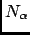
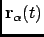
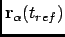
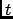
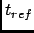
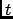
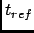
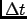
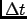

Next: Parameters
Up: Root Mean-Square Deviation
Previous: Root Mean-Square Deviation
Contents
Theory and implementation
The RMSD is maybe the most popular estimator of structural similarity. It is a
numerical measure of the difference between two structures that can be defined as:
where  is the number of atoms of the system, and
 and
 are
respectively the position of atom  at time  and  where is a reference time usually
choosen as the first step of the simulation.
Typically, RMSD is used to quantify the structural evolution of the system during the simulation. It can
provide precious information about the system especially if it reached equilibrium or conversely if major
structural changes occured during the simulation.
at time  and  where is a reference time usually
choosen as the first step of the simulation.
Typically, RMSD is used to quantify the structural evolution of the system during the simulation. It can
provide precious information about the system especially if it reached equilibrium or conversely if major
structural changes occured during the simulation.
In nMOLDYN, RMSD is computed using the discretized version of equation 4.30:
where  is the number of frames and  is the time step.
is the number of frames and  is the time step.
Next: Parameters
Up: Root Mean-Square Deviation
Previous: Root Mean-Square Deviation
Contents
pellegrini eric
2009-10-06